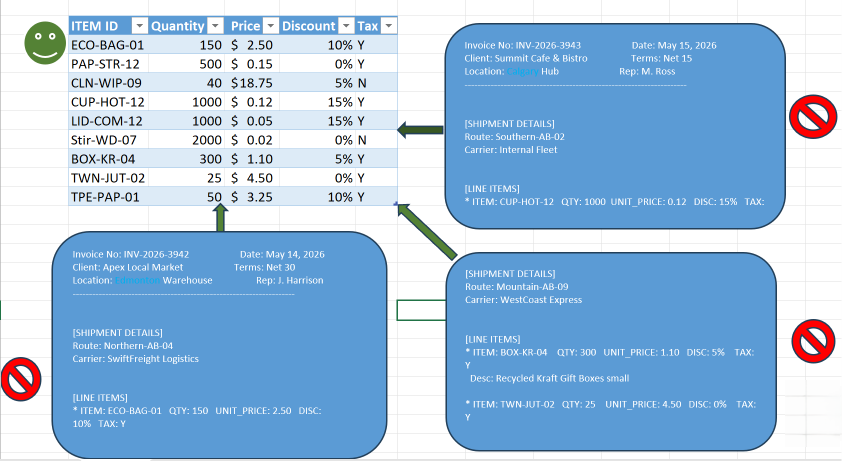

Transforming retail operations and small business efficiency through automated reporting and clear data insights.
Engineered an automated workflow to extract and clean unstructured text from raw WordPad invoices, converting them into fully structured, analyzable Excel datasets.
Designed dynamic retail dashboards to monitor inventory thresholds and sales performance, replacing manual tracking with scalable data models.
Goal: Eliminate manual data entry by extracting key metrics from raw text files.

Critical billing data was locked inside raw, unstructured WordPad invoices, making bulk analysis impossible without hours of manual transcription.
Developed an automated Power Query workflow in Excel to ingest text files, parse out formatting, and cleanly extract line items, dates, and totals.
Delivered a fully structured, analyzable dataset. The solution entirely removed the need for manual data entry and improved reporting accuracy.